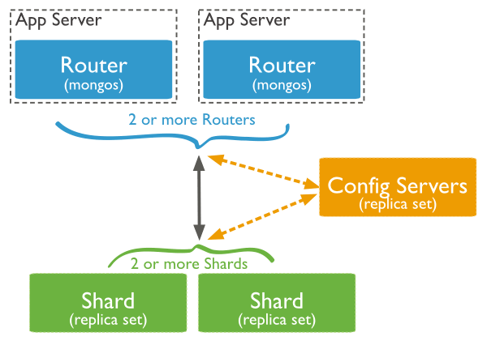
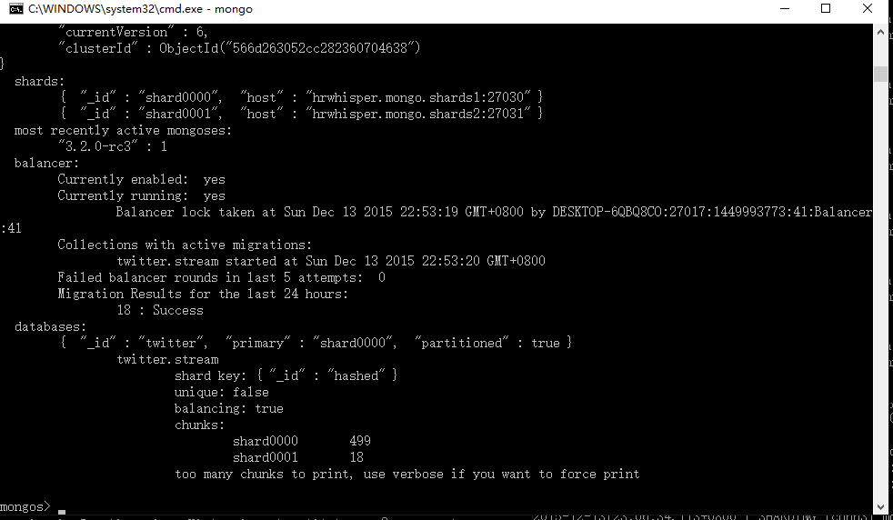
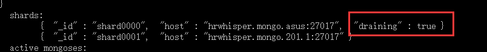

<!DOCTYPE html>


<html lang="en">


<head>
  <meta charset="utf-8" />
   
  <meta name="keywords" content="c,c++,java,python,leetcode,algorithm,reading,life,moods,machine-learning,data-mining,deep-learning,AI" />
   
  <meta name="description" content="一个分享机器学习、算法与数据结构，个人学习心得、读书笔记、生活的博客。" />
  
  <meta name="viewport" content="width=device-width, initial-scale=1, maximum-scale=1" />
  <title>
    windows 下 MongoDB 数据分片(sharding) 实战 |  一个分享机器学习、算法与数据结构，个人学习心得、读书笔记、生活的博客。
  </title>
  <meta name="generator" content="hexo-theme-ayer">
  
  <link rel="shortcut icon" href="/favicon.ico" />
  
  
<link rel="stylesheet" href="/dist/main.css">

  
<link rel="stylesheet" href="https://cdn.jsdelivr.net/gh/Shen-Yu/cdn/css/remixicon.min.css">

  
<link rel="stylesheet" href="/css/custom.css">

  
  
<script src="https://cdn.jsdelivr.net/npm/pace-js@1.0.2/pace.min.js"></script>

  
  

  

</head>

</html>

<body>
  <div id="app">
    
      
    <main class="content on">
      <section class="outer">
  <article
  id="post-mongodb-sharding-tutorials-on-windows"
  class="article article-type-post"
  itemscope
  itemprop="blogPost"
  data-scroll-reveal
>
  <div class="article-inner">
    
    <header class="article-header">
       
<h1 class="article-title sea-center" style="border-left:0" itemprop="name">
  windows 下 MongoDB 数据分片(sharding) 实战
</h1>
 

    </header>
     
    <div class="article-meta">
      <a href="/mongodb-sharding-tutorials-on-windows/" class="article-date">
  <time datetime="2015-12-14T01:45:39.000Z" itemprop="datePublished">2015-12-14</time>
</a> 
      
  <div class="article-category">
    <a class="article-category-link" href="/categories/study/">study</a> / <a class="article-category-link" href="/categories/study/%E6%95%B0%E6%8D%AE%E5%BA%93/">数据库</a>
  </div>
 
       
        
<div class="word_count">
    <span class="post-time">
        <span class="post-meta-item-icon">
            <i class="ri-quill-pen-line"></i>
            <span class="post-meta-item-text"> Word count:</span>
            <span class="post-count">961</span>
        </span>
    </span>

    <span class="post-time">
        &nbsp; | &nbsp;
        <span class="post-meta-item-icon">
            <i class="ri-book-open-line"></i>
            <span class="post-meta-item-text"> Reading time≈</span>
            <span class="post-count">4 min</span>
        </span>
    </span>
</div>

      
       
        <div class="word_count">
    <span class="post-meta-item-icon">
        <i class="ri-eye-fill"></i> 
        阅读数:<span id="/mongodb-sharding-tutorials-on-windows/" data-flag-title="windows 下 MongoDB 数据分片(sharding) 实战" class="leancloud_visitors">0</span>次
    </span>
</div>
      
    </div>
      
    <div class="tocbot"></div>


  
    <div class="article-entry" itemprop="articleBody">
       
  <p>前言：</p>
<p>当数据量大的时候，一台机器可能不足以满足性能的需求，如存储空间、内存不足，而垂直扩展十分昂贵，故用分片进行水平扩展是一个很好的解决方法。</p>
<p>本文介绍了mongodb 进行分片的方法和步骤<br><a id="more"></a></p>
<h2 id="mongodb分片-结构"><a href="#mongodb分片-结构" class="headerlink" title="mongodb分片 结构"></a>mongodb分片 结构</h2><p></p>
<p>主要由下面的三部分组成</p>
<ul>
<li><p>Shard:</p>
<ul>
<li>可以使mongod也可以是几台机器组个一个replica set，防止主机单点故障</li>
</ul>
</li>
<li><p>Config Server:</p>
<ul>
<li>存储整个集群的配置信息，如 chunk 大小。</li>
</ul>
</li>
<li><p>Query Routers:</p>
<ul>
<li>mongos实例，是客户端的入口。让整个集群看上去像单一数据库，前端应用可以透明使用。</li>
</ul>
</li>
</ul>
<h2 id="配置步骤"><a href="#配置步骤" class="headerlink" title="配置步骤"></a>配置步骤</h2><h3 id="1-启动所有的配置服务器config-server"><a href="#1-启动所有的配置服务器config-server" class="headerlink" title="1.启动所有的配置服务器config server"></a>1.启动所有的配置服务器config server</h3><p>语法：</p>
<figure class="highlight plain"><table><tr><td class="gutter"><pre><span class="line">1</span><br></pre></td><td class="code"><pre><span class="line">mongod --configsvr --replSet configReplSet --port &lt;port&gt; --dbpath &lt;path&gt;</span><br></pre></td></tr></table></figure>
<p>例如:</p>
<figure class="highlight plain"><table><tr><td class="gutter"><pre><span class="line">1</span><br><span class="line">2</span><br><span class="line">3</span><br></pre></td><td class="code"><pre><span class="line">mongod --configsvr --dbpath e:\mongodb\config\ --port 27019</span><br><span class="line">mongod --configsvr --dbpath e:\mongodb\config2\ --port 27020</span><br><span class="line">mongod --configsvr --dbpath e:\mongodb\config3\ --port 27021</span><br></pre></td></tr></table></figure>
<p>或者用配置文件 <a target="_blank" rel="noopener" href="https://docs.mongodb.org/manual/reference/configuration-options/">https://docs.mongodb.org/manual/reference/configuration-options/</a></p>
<h3 id="2-启动Mongos实例"><a href="#2-启动Mongos实例" class="headerlink" title="2.启动Mongos实例"></a>2.启动Mongos实例</h3><p>语法(下面两种均可)</p>
<figure class="highlight plain"><table><tr><td class="gutter"><pre><span class="line">1</span><br><span class="line">2</span><br></pre></td><td class="code"><pre><span class="line">mongos --configdb configReplSet&#x2F;&lt;cfgsvr1:port1&gt;,&lt;cfgsvr2:port2&gt;,&lt;cfgsvr3:port3&gt;</span><br><span class="line">mongos --configdb cfg0.example.net:27019,cfg1.example.net:27019,cfg2.example.net:27019</span><br></pre></td></tr></table></figure>
<p>例如:</p>
<figure class="highlight plain"><table><tr><td class="gutter"><pre><span class="line">1</span><br></pre></td><td class="code"><pre><span class="line">mongos --configdb hrwhisper.mongo.shards1:27019,hrwhisper.mongo.shards2:27020,hrwhisper.mongo.shards3:27021</span><br></pre></td></tr></table></figure>
<p>注意：</p>
<ul>
<li><p>使用localhost和远程地址混用会报错，我是修改host文件:</p>
<ul>
<li>127.0.0.1 hrwhisper.mongo.shards1</li>
<li>127.0.0.1 hrwhisper.mongo.shards2</li>
<li>127.0.0.1 hrwhisper.mongo.shards3</li>
</ul>
</li>
<li><p>mongos实例默认运行在27017端口</p>
</li>
<li>貌似3.2需要3个config server</li>
</ul>
<h3 id="3-启动shard"><a href="#3-启动shard" class="headerlink" title="3.启动shard"></a>3.启动shard</h3><p>可以用普通的mongod</p>
<figure class="highlight plain"><table><tr><td class="gutter"><pre><span class="line">1</span><br><span class="line">2</span><br></pre></td><td class="code"><pre><span class="line">mongod --dbpath e:\mongodb\twitter\ --port 27030</span><br><span class="line">mongod --dbpath e:\mongodb\twitter2\ --port 27031</span><br></pre></td></tr></table></figure>
<h3 id="4-添加分片进mongos"><a href="#4-添加分片进mongos" class="headerlink" title="4.添加分片进mongos"></a>4.添加分片进mongos</h3><p>1.用mongo 连接上mongos（直接输入mongo既可以连上，如果你修改了mongos端口，则mongo —port <port>）</p>
<figure class="highlight plain"><table><tr><td class="gutter"><pre><span class="line">1</span><br></pre></td><td class="code"><pre><span class="line">mongo --host &lt;hostname of machine running mongos&gt; --port &lt;port mongos listens on&gt;</span><br></pre></td></tr></table></figure>
<ol>
<li>使用sh.addShard() 添加shard to cluster  （每个shard都要进行一次）</li>
</ol>
<ul>
<li><p>添加 <strong>复制集</strong>名为rs1运行在mongodb0.example.net ：27017</p>
<ul>
<li>sh.addShard( “rs1/mongodb0.example.net:27017” )</li>
</ul>
</li>
<li><p>添加单一的 mongod</p>
<ul>
<li><strong>sh.addShard( “mongodb0.example.net:27017” )</strong></li>
</ul>
</li>
</ul>
<p>例如:</p>
<figure class="highlight plain"><table><tr><td class="gutter"><pre><span class="line">1</span><br><span class="line">2</span><br></pre></td><td class="code"><pre><span class="line">sh.addShard(&quot;hrwhisper.mongo.201.1:27030&quot; )</span><br><span class="line">sh.addShard(&quot;hrwhisper.mongo.asus:27030&quot; )</span><br></pre></td></tr></table></figure>
<p><strong>注：</strong></p>
<ul>
<li><strong>需要一些时间将块迁移到新的**</strong>shard**</li>
<li>可以使用 <a target="_blank" rel="noopener" href="https://docs.mongodb.org/manual/reference/command/addShard/#dbcmd.addShard">database command</a> 来设置名称和shards最大的大小</li>
</ul>
<h3 id="5-对database启用分片"><a href="#5-对database启用分片" class="headerlink" title="5.对database启用分片"></a>5.对database启用分片</h3><p>先用mongo shell 连接到mongos 实例，</p>
<p>使用sh.enableSharding() 指定要开启分片的数据库或者db.runCommand()</p>
<figure class="highlight plain"><table><tr><td class="gutter"><pre><span class="line">1</span><br><span class="line">2</span><br></pre></td><td class="code"><pre><span class="line">sh.enableSharding(&quot;&lt;database&gt;&quot;)</span><br><span class="line">db.runCommand( &#123; enableSharding: &lt;database&gt; &#125; )</span><br></pre></td></tr></table></figure>
<p>例如:</p>
<figure class="highlight plain"><table><tr><td class="gutter"><pre><span class="line">1</span><br></pre></td><td class="code"><pre><span class="line">sh.enableSharding(&quot;twitter&quot;)</span><br></pre></td></tr></table></figure>
<p>一旦enable了个数据库，mongos将会把数据库里的不同数据集放在不同的分片上。只有数据集也被分片，否则一个数据集的所有数据将放在一个分片上。</p>
<h3 id="6-对collection启用分片"><a href="#6-对collection启用分片" class="headerlink" title="6.对collection启用分片"></a>6.对collection启用分片</h3><p>使用 sh.shardCollection() 对集合进行分片</p>
<ul>
<li>sh.shardCollection(“<database>.<collection>“, shard-key-pattern)</li>
</ul>
<p>例如:</p>
<figure class="highlight plain"><table><tr><td class="gutter"><pre><span class="line">1</span><br><span class="line">2</span><br><span class="line">3</span><br><span class="line">4</span><br></pre></td><td class="code"><pre><span class="line">通过zipcode分片，如果zipcode值一样，则用name</span><br><span class="line">sh.shardCollection(&quot;records.people&quot;, &#123; &quot;zipcode&quot;: 1, &quot;name&quot;: 1 &#125; )</span><br><span class="line">通过对_id进行哈希分片</span><br><span class="line">sh.shardCollection(&quot;events.alerts&quot;, &#123; &quot;_id&quot;: &quot;hashed&quot; &#125; )</span><br></pre></td></tr></table></figure>
<p><strong>注：需要先建立对应的索引</strong></p>
<figure class="highlight plain"><table><tr><td class="gutter"><pre><span class="line">1</span><br></pre></td><td class="code"><pre><span class="line">db.stream.createIndex( &#123; _id: &quot;hashed&quot; &#125; )</span><br></pre></td></tr></table></figure>
<h2 id="其他"><a href="#其他" class="headerlink" title="其他"></a>其他</h2><h3 id="查看分片状态"><a href="#查看分片状态" class="headerlink" title="查看分片状态"></a>查看分片状态</h3><p>用mongo 连接上mongos， 然后通过Mongo命令行输入：sh.status()</p>
<p></p>
<h3 id="移除分片"><a href="#移除分片" class="headerlink" title="移除分片"></a>移除分片</h3><p>需要切换到admin collection，然后再执行移除分片的代码：</p>
<figure class="highlight plain"><table><tr><td class="gutter"><pre><span class="line">1</span><br></pre></td><td class="code"><pre><span class="line">db.runCommand( &#123; removeShard: &quot;&lt;shardname&gt;&quot; &#125; )</span><br></pre></td></tr></table></figure>
<p>再次查看状态：</p>
<p></p>
<h2 id="分片实战"><a href="#分片实战" class="headerlink" title="分片实战"></a>分片实战</h2><p>修改hosts文件：</p>
<ul>
<li>127.0.0.1 hrwhisper.mongo.shards1</li>
<li>127.0.0.1 hrwhisper.mongo.shards2</li>
<li>127.0.0.1 hrwhisper.mongo.shards3</li>
</ul>
<figure class="highlight plain"><table><tr><td class="gutter"><pre><span class="line">1</span><br><span class="line">2</span><br><span class="line">3</span><br><span class="line">4</span><br><span class="line">5</span><br><span class="line">6</span><br><span class="line">7</span><br><span class="line">8</span><br><span class="line">9</span><br><span class="line">10</span><br><span class="line">11</span><br><span class="line">12</span><br><span class="line">13</span><br><span class="line">14</span><br><span class="line">15</span><br><span class="line">16</span><br></pre></td><td class="code"><pre><span class="line">mongod --configsvr --dbpath e:\mongodb\config\ --port 27019</span><br><span class="line">mongod --configsvr --dbpath e:\mongodb\config2\ --port 27020</span><br><span class="line">mongod --configsvr --dbpath e:\mongodb\config3\ --port 27021</span><br><span class="line"></span><br><span class="line">mongos --configdb hrwhisper.mongo.shards1:27019,hrwhisper.mongo.shards2:27020,hrwhisper.mongo.shards3:27021</span><br><span class="line"></span><br><span class="line">mongod --dbpath e:\mongodb\twitter\ --port 27030</span><br><span class="line">mongod --dbpath e:\mongodb\twitter2\ --port 27031</span><br><span class="line"></span><br><span class="line">sh.addShard(&quot;hrwhisper.mongo.shards1:27030&quot; )</span><br><span class="line">sh.addShard(&quot;hrwhisper.mongo.shards2:27031&quot; )</span><br><span class="line"></span><br><span class="line">sh.enableSharding(&quot;twitter&quot;)</span><br><span class="line">sh.shardCollection(&quot;twitter.stream&quot;, &#123;&#39;_id&#39;:&#39;hashed&#39;&#125;)</span><br><span class="line"></span><br><span class="line"></span><br></pre></td></tr></table></figure>
<h2 id="参考资料"><a href="#参考资料" class="headerlink" title="参考资料"></a>参考资料</h2><ul>
<li><a target="_blank" rel="noopener" href="https://docs.mongodb.org/manual/tutorial/deploy-shard-cluster/">MongoDB 官方文档</a></li>
<li><a target="_blank" rel="noopener" href="http://www.cnblogs.com/zhanjindong/archive/2013/04/11/3015394.html">MongoDB分片实战(二)：Sharding</a></li>
<li><a target="_blank" rel="noopener" href="http://www.itpub.net/thread-1843459-1-1.html">MongoDB集群的Sharding详解</a></li>
<li><a target="_blank" rel="noopener" href="http://blog.fens.me/mongodb-shard/">MongoDB 自动分片 auto sharding</a></li>
</ul>
 
      <!-- reward -->
      
      <div id="reword-out">
        <div id="reward-btn">
          Donate
        </div>
      </div>
      
    </div>
    

    <!-- copyright -->
    
    <div class="declare">
      <ul class="post-copyright">
        <li>
          <i class="ri-copyright-line"></i>
          <strong>Copyright： </strong>
          
          Copyright is owned by the author. For commercial reprints, please contact the author for authorization. For non-commercial reprints, please indicate the source.
          
        </li>
      </ul>
    </div>
    
    <footer class="article-footer">
       
<div class="share-btn">
      <span class="share-sns share-outer">
        <i class="ri-share-forward-line"></i>
        分享
      </span>
      <div class="share-wrap">
        <i class="arrow"></i>
        <div class="share-icons">
          
          <a class="weibo share-sns" href="javascript:;" data-type="weibo">
            <i class="ri-weibo-fill"></i>
          </a>
          <a class="weixin share-sns wxFab" href="javascript:;" data-type="weixin">
            <i class="ri-wechat-fill"></i>
          </a>
          <a class="qq share-sns" href="javascript:;" data-type="qq">
            <i class="ri-qq-fill"></i>
          </a>
          <a class="douban share-sns" href="javascript:;" data-type="douban">
            <i class="ri-douban-line"></i>
          </a>
          <!-- <a class="qzone share-sns" href="javascript:;" data-type="qzone">
            <i class="icon icon-qzone"></i>
          </a> -->
          
          <a class="facebook share-sns" href="javascript:;" data-type="facebook">
            <i class="ri-facebook-circle-fill"></i>
          </a>
          <a class="twitter share-sns" href="javascript:;" data-type="twitter">
            <i class="ri-twitter-fill"></i>
          </a>
          <a class="google share-sns" href="javascript:;" data-type="google">
            <i class="ri-google-fill"></i>
          </a>
        </div>
      </div>
</div>

<div class="wx-share-modal">
    <a class="modal-close" href="javascript:;"><i class="ri-close-circle-line"></i></a>
    <p>扫一扫，分享到微信</p>
    <div class="wx-qrcode">
      
    </div>
</div>

<div id="share-mask"></div>  
  <ul class="article-tag-list" itemprop="keywords"><li class="article-tag-list-item"><a class="article-tag-list-link" href="/tags/mongodb/" rel="tag">mongodb</a></li><li class="article-tag-list-item"><a class="article-tag-list-link" href="/tags/nosql/" rel="tag">nosql</a></li></ul>

    </footer>
  </div>

   
  <nav class="article-nav">
    
      <a href="/leetcode-maximum-product-of-word-lengths/" class="article-nav-link">
        <strong class="article-nav-caption">上一篇</strong>
        <div class="article-nav-title">
          
            leetcode Maximum Product of Word Lengths
          
        </div>
      </a>
    
    
      <a href="/leetcode-peeking-iterator/" class="article-nav-link">
        <strong class="article-nav-caption">下一篇</strong>
        <div class="article-nav-title">leetcode Peeking Iterator</div>
      </a>
    
  </nav>

   
<!-- valine评论 -->
<div id="vcomments-box">
  <div id="vcomments"></div>
</div>
<script src="//cdn1.lncld.net/static/js/3.0.4/av-min.js"></script>
<script src="https://cdn.jsdelivr.net/npm/valine@1.4.14/dist/Valine.min.js"></script>
<script>
  new Valine({
    el: "#vcomments",
    app_id: "fVcjWMD8aI6F0qEfKdUaHa4f-gzGzoHsz",
    app_key: "b26lBsbwmVyxTSnNrsBrnv3U",
    path: window.location.pathname,
    avatar: "monsterid",
    placeholder: "给我的文章加点评论吧~",
    recordIP: true,
  });
  const infoEle = document.querySelector("#vcomments .info");
  if (infoEle && infoEle.childNodes && infoEle.childNodes.length > 0) {
    infoEle.childNodes.forEach(function (item) {
      item.parentNode.removeChild(item);
    });
  }
</script>
<style>
  #vcomments-box {
    padding: 5px 30px;
  }

  @media screen and (max-width: 800px) {
    #vcomments-box {
      padding: 5px 0px;
    }
  }

  #vcomments-box #vcomments {
    background-color: #fff;
  }

  .v .vlist .vcard .vh {
    padding-right: 20px;
  }

  .v .vlist .vcard {
    padding-left: 10px;
  }
</style>

 
     
</article>

</section>
      <footer class="footer">
  <div class="outer">
    <ul>
      <li>
        Copyrights &copy;
        2013-2020
        <i class="ri-heart-fill heart_icon"></i> hrwhisper
      </li>
    </ul>
    <ul>
      <li>
        
        
        
        Powered by <a href="https://hexo.io" target="_blank">Hexo</a>
        <span class="division">|</span>
        Theme - <a href="https://github.com/Shen-Yu/hexo-theme-ayer" target="_blank">Ayer</a>
        
      </li>
    </ul>
    <ul>
      <li>
        
        
        <span>
  <span><i class="ri-user-3-fill"></i>Visitors:<span id="busuanzi_value_site_uv"></span></s>
  <span class="division">|</span>
  <span><i class="ri-eye-fill"></i>Views:<span id="busuanzi_value_page_pv"></span></span>
</span>
        
      </li>
    </ul>
    <ul>
      
    </ul>
    <ul>
      
    </ul>
    <ul>
      <li>
        <!-- cnzz统计 -->
        
      </li>
    </ul>
  </div>
</footer>

 
  <script src="https://cdn.bootcss.com/jquery/3.2.1/jquery.min.js"></script>
<script src="//cdn1.lncld.net/static/js/2.5.0/av-min.js"></script>
<script type="text/javascript">
var leancloud_app_id  = 'fVcjWMD8aI6F0qEfKdUaHa4f-gzGzoHsz';
var leancloud_app_key = 'b26lBsbwmVyxTSnNrsBrnv3U';

AV.init({
    appId: leancloud_app_id,
    appKey: leancloud_app_key
});

// https://leancloud.cn/docs/leanstorage_guide-js.html#hash1873238850
function showTime(Counter) {
  console.log("show time");
	let query = new AV.Query(Counter);
  query.greaterThanOrEqualTo("time", 0);		
  query.find().then((results) => {
      if (results.length > 0) {
        let data = results;
        $('.leancloud_visitors').each(function() {
          let url = $(this).attr('id').trim();		
          for (let i = 0; i < data.length; i++) {
            let object = data[i];
            let content = object.get('time');
            let _url = object.get('url');
            if(url == _url){
              $(this).text(content);
            }
          }
        });
      }
  });
}

function addCount(Counter) {
  const obj = $(".leancloud_visitors");
	url = obj.attr('id').trim();
  title = obj.attr('data-flag-title').trim();

  const query = new AV.Query('Counter');
  query.equalTo("url", url);

	query.find().then((results) => {
			if (results.length > 0) {
				var counter = results[0];
				counter.increment("time", 1);
				counter.save(null, {fetchWhenSave: true}).then(() => {
          let content = counter.get('time');
          $(document.getElementById(url)).text(content);
        }, (error)=> {
						console.log('Failed to save Visitor num, with error message: ' + error.message);
        });
			} else {
				var newcounter = new Counter();
				newcounter.set("title", title);
				newcounter.set("url", url);
        newcounter.set("time", 1);
        newcounter.save(null, {fetchWhenSave: true}).then(() => {
          var content = newcounter.get('time');
          $(document.getElementById(url)).text(content);
        }, (error)=> {
          console.log('Failed to create' + error.message);
        });
			}
	});
}

$(function() {
  var Counter = AV.Object.extend("Counter");
	if ($('.leancloud_visitors').length == 1) {
		addCount(Counter);
	} else {
	  showTime(Counter);
  }
}); 
</script>


      <div class="float_btns">
        <div class="totop" id="totop">
  <i class="ri-arrow-up-line"></i>
</div>

<div class="todark" id="todark">
  <i class="ri-moon-line"></i>
</div>

      </div>
    </main>
    <aside class="sidebar on">
      <button class="navbar-toggle"></button>
<nav class="navbar">
  
  <div class="logo">
    <a href="/"></a>
  </div>
  
  <ul class="nav nav-main">
    
    <li class="nav-item">
      <a class="nav-item-link" href="/">主页</a>
    </li>
    
    <li class="nav-item">
      <a class="nav-item-link" href="/archives">归档</a>
    </li>
    
    <li class="nav-item">
      <a class="nav-item-link" href="/categories">分类</a>
    </li>
    
    <li class="nav-item">
      <a class="nav-item-link" href="/tags">标签</a>
    </li>
    
    <li class="nav-item">
      <a class="nav-item-link" href="/blog-building">博客建设</a>
    </li>
    
    <li class="nav-item">
      <a class="nav-item-link" href="/friend-link">友链</a>
    </li>
    
    <li class="nav-item">
      <a class="nav-item-link" href="/leetcode-algorithm-solution">leetcode题解</a>
    </li>
    
    <li class="nav-item">
      <a class="nav-item-link" href="/messageboard">留言板</a>
    </li>
    
    <li class="nav-item">
      <a class="nav-item-link" href="/about-me">关于我</a>
    </li>
    
  </ul>
</nav>
<nav class="navbar navbar-bottom">
  <ul class="nav">
    <li class="nav-item">
      
      <a class="nav-item-link nav-item-search"  title="Search">
        <i class="ri-search-line"></i>
      </a>
      
      
    </li>
  </ul>
</nav>
<div class="search-form-wrap">
  <div class="local-search local-search-plugin">
  <input type="search" id="local-search-input" class="local-search-input" placeholder="Search...">
  <div id="local-search-result" class="local-search-result"></div>
</div>
</div>
    </aside>
    <script>
      if (window.matchMedia("(max-width: 768px)").matches) {
        document.querySelector('.content').classList.remove('on');
        document.querySelector('.sidebar').classList.remove('on');
      }
    </script>
    <div id="mask"></div>

<!-- #reward -->
<div id="reward">
  <span class="close"><i class="ri-close-line"></i></span>
  <p class="reward-p"><i class="ri-cup-line"></i>请我喝杯咖啡吧~</p>
  <div class="reward-box">
    
    <div class="reward-item">
      
      <span class="reward-type">支付宝</span>
    </div>
    
    
    <div class="reward-item">
      
      <span class="reward-type">微信</span>
    </div>
    
  </div>
</div>
    
<script src="/js/jquery-2.0.3.min.js"></script>


<script src="/js/lazyload.min.js"></script>

<!-- Tocbot -->


<script src="/js/tocbot.min.js"></script>

<script>
  tocbot.init({
    tocSelector: '.tocbot',
    contentSelector: '.article-entry',
    headingSelector: 'h1, h2, h3',
    hasInnerContainers: true,
    scrollSmooth: false,
	  scrollSmoothDuration: 420,
    scrollContainer: 'main',
    positionFixedSelector: '.tocbot',
    positionFixedClass: 'is-position-fixed',
    fixedSidebarOffset: 'auto',
	collapseDepth: 2,
  });
</script>

<script src="https://cdn.jsdelivr.net/npm/jquery-modal@0.9.2/jquery.modal.min.js"></script>
<link rel="stylesheet" href="https://cdn.jsdelivr.net/npm/jquery-modal@0.9.2/jquery.modal.min.css">
<script src="https://cdn.jsdelivr.net/npm/justifiedGallery@3.7.0/dist/js/jquery.justifiedGallery.min.js"></script>

<script src="/dist/main.js"></script>

<!-- ImageViewer -->

<!-- Root element of PhotoSwipe. Must have class pswp. -->
<div class="pswp" tabindex="-1" role="dialog" aria-hidden="true">

    <!-- Background of PhotoSwipe. 
         It's a separate element as animating opacity is faster than rgba(). -->
    <div class="pswp__bg"></div>

    <!-- Slides wrapper with overflow:hidden. -->
    <div class="pswp__scroll-wrap">

        <!-- Container that holds slides. 
            PhotoSwipe keeps only 3 of them in the DOM to save memory.
            Don't modify these 3 pswp__item elements, data is added later on. -->
        <div class="pswp__container">
            <div class="pswp__item"></div>
            <div class="pswp__item"></div>
            <div class="pswp__item"></div>
        </div>

        <!-- Default (PhotoSwipeUI_Default) interface on top of sliding area. Can be changed. -->
        <div class="pswp__ui pswp__ui--hidden">

            <div class="pswp__top-bar">

                <!--  Controls are self-explanatory. Order can be changed. -->

                <div class="pswp__counter"></div>

                <button class="pswp__button pswp__button--close" title="Close (Esc)"></button>

                <button class="pswp__button pswp__button--share" style="display:none" title="Share"></button>

                <button class="pswp__button pswp__button--fs" title="Toggle fullscreen"></button>

                <button class="pswp__button pswp__button--zoom" title="Zoom in/out"></button>

                <!-- Preloader demo http://codepen.io/dimsemenov/pen/yyBWoR -->
                <!-- element will get class pswp__preloader--active when preloader is running -->
                <div class="pswp__preloader">
                    <div class="pswp__preloader__icn">
                        <div class="pswp__preloader__cut">
                            <div class="pswp__preloader__donut"></div>
                        </div>
                    </div>
                </div>
            </div>

            <div class="pswp__share-modal pswp__share-modal--hidden pswp__single-tap">
                <div class="pswp__share-tooltip"></div>
            </div>

            <button class="pswp__button pswp__button--arrow--left" title="Previous (arrow left)">
            </button>

            <button class="pswp__button pswp__button--arrow--right" title="Next (arrow right)">
            </button>

            <div class="pswp__caption">
                <div class="pswp__caption__center"></div>
            </div>

        </div>

    </div>

</div>

<link rel="stylesheet" href="https://cdn.jsdelivr.net/npm/photoswipe@4.1.3/dist/photoswipe.min.css">
<link rel="stylesheet" href="https://cdn.jsdelivr.net/npm/photoswipe@4.1.3/dist/default-skin/default-skin.min.css">
<script src="https://cdn.jsdelivr.net/npm/photoswipe@4.1.3/dist/photoswipe.min.js"></script>
<script src="https://cdn.jsdelivr.net/npm/photoswipe@4.1.3/dist/photoswipe-ui-default.min.js"></script>

<script>
    function viewer_init() {
        let pswpElement = document.querySelectorAll('.pswp')[0];
        let $imgArr = document.querySelectorAll(('.article-entry img:not(.reward-img)'))

        $imgArr.forEach(($em, i) => {
            $em.onclick = () => {
                // slider展开状态
                // todo: 这样不好，后面改成状态
                if (document.querySelector('.left-col.show')) return
                let items = []
                $imgArr.forEach(($em2, i2) => {
                    let img = $em2.getAttribute('data-idx', i2)
                    let src = $em2.getAttribute('data-target') || $em2.getAttribute('src')
                    let title = $em2.getAttribute('alt')
                    // 获得原图尺寸
                    const image = new Image()
                    image.src = src
                    items.push({
                        src: src,
                        w: image.width || $em2.width,
                        h: image.height || $em2.height,
                        title: title
                    })
                })
                var gallery = new PhotoSwipe(pswpElement, PhotoSwipeUI_Default, items, {
                    index: parseInt(i)
                });
                gallery.init()
            }
        })
    }
    viewer_init()
</script>

<!-- MathJax -->

<script type="text/x-mathjax-config">
  MathJax.Hub.Config({
      tex2jax: {
          inlineMath: [ ['$','$'], ["\\(","\\)"]  ],
          processEscapes: true,
          skipTags: ['script', 'noscript', 'style', 'textarea', 'pre', 'code']
      }
  });

  MathJax.Hub.Queue(function() {
      var all = MathJax.Hub.getAllJax(), i;
      for(i=0; i < all.length; i += 1) {
          all[i].SourceElement().parentNode.className += ' has-jax';
      }
  });
</script>

<script src="https://cdnjs.cloudflare.com/ajax/libs/mathjax/2.7.1/MathJax.js?config=TeX-MML-AM_CHTML"></script>
<script>
  var ayerConfig = {
    mathjax: true
  }
</script>

<!-- Katex -->

<!-- busuanzi  -->


<script src="/js/busuanzi-2.3.pure.min.js"></script>


<!-- ClickLove -->

<!-- ClickBoom1 -->

<!-- ClickBoom2 -->

<!-- CodeCopy -->


<link rel="stylesheet" href="/css/clipboard.css">

<script src="https://cdn.jsdelivr.net/npm/clipboard@2/dist/clipboard.min.js"></script>
<script>
  function wait(callback, seconds) {
    var timelag = null;
    timelag = window.setTimeout(callback, seconds);
  }
  !function (e, t, a) {
    var initCopyCode = function(){
      var copyHtml = '';
      copyHtml += '<button class="btn-copy" data-clipboard-snippet="">';
      copyHtml += '<i class="ri-file-copy-2-line"></i><span>COPY</span>';
      copyHtml += '</button>';
      $(".highlight .code pre").before(copyHtml);
      $(".article pre code").before(copyHtml);
      var clipboard = new ClipboardJS('.btn-copy', {
        target: function(trigger) {
          return trigger.nextElementSibling;
        }
      });
      clipboard.on('success', function(e) {
        let $btn = $(e.trigger);
        $btn.addClass('copied');
        let $icon = $($btn.find('i'));
        $icon.removeClass('ri-file-copy-2-line');
        $icon.addClass('ri-checkbox-circle-line');
        let $span = $($btn.find('span'));
        $span[0].innerText = 'COPIED';
        
        wait(function () { // 等待两秒钟后恢复
          $icon.removeClass('ri-checkbox-circle-line');
          $icon.addClass('ri-file-copy-2-line');
          $span[0].innerText = 'COPY';
        }, 2000);
      });
      clipboard.on('error', function(e) {
        e.clearSelection();
        let $btn = $(e.trigger);
        $btn.addClass('copy-failed');
        let $icon = $($btn.find('i'));
        $icon.removeClass('ri-file-copy-2-line');
        $icon.addClass('ri-time-line');
        let $span = $($btn.find('span'));
        $span[0].innerText = 'COPY FAILED';
        
        wait(function () { // 等待两秒钟后恢复
          $icon.removeClass('ri-time-line');
          $icon.addClass('ri-file-copy-2-line');
          $span[0].innerText = 'COPY';
        }, 2000);
      });
    }
    initCopyCode();
  }(window, document);
</script>


<!-- CanvasBackground -->


    
  </div>
</body>

</html>